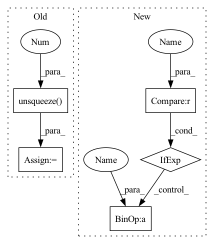

Pattern ID :11038

Before Change
visual_emo_vecs = self.affineVisual(text_emo_vecs)
audio_emo_vecs = self.affineAudio(text_emo_vecs)
text_emo_vecs = text_emo_vecs.unsqueeze(0).repeat(batch_size, 1, 1)
visual_emo_vecs = visual_emo_vecs.unsqueeze(0).repeat(batch_size, 1, 1)
audio_emo_vecs = audio_emo_vecs.unsqueeze(0).repeat(batch_size, 1, 1)
text_attn_feature = self.attention(output_text, text_emo_vecs)
visual_attn_feature = self.attention(output_visual, visual_emo_vecs)
audio_attn_feature = self.attention(output_audio, audio_emo_vecs)
// TODO: try residual connection
logits = self.out(torch.cat((text_attn_feature, visual_attn_feature, audio_attn_feature), dim=1))
return logits
After Change
audio_emo_vecs = self.affineAudio(text_emo_vecs_origin)
audio_emo_vecs = audio_emo_vecs.unsqueeze(0).repeat(batch_size, 1, 1)
audio_attn_weights = self.attention(output_audio, audio_emo_vecs)
logits = audio_attn_weights if logits is None else logits + audio_attn_weights
if "v" in self.modalities:
output_visual, _ = self.RNNs[2](X_visual)
In pattern: SUPERPATTERN
Frequency: 3
Non-data size: 5
Instances
Fragment ID: 37979971
Project Name: wenliangdai/modality-transferable-mer
Commit Name: b0e565d11d6b3bf9f65fb1dcbdc8c641a2bc8054
Time: 2020-06-10
Author: wenliang.dai.1995@gmail.com
File Name: src/models/temp.py
M Class Name: EmotionEmbAttnModel
N Class Name: EmotionEmbAttnModel
M Method Name: forward(4)
N Method Name: forward(4)
M Parent Class: nn.Module
N Parent Class: nn.Module
M File Name: src/models/temp.py
N File Name: src/models/temp.py
M Start Line: 53
M End Line: 79
N Start Line: 70
N End Line: 96
'>
Before Change
self.samples += num_batches
for i in range(num_batches):
for j in range(num_labels):
intersection = (
(y_pred[i, j, :, :].unsqueeze(0) & y_true[i, j, :, :].unsqueeze(0))
.float()
.sum((1, 2))
)
After Change
y_pred_local = y_pred[i, j, :, :].unsqueeze(0)
y_true_local = y_true[i, j, :, :].unsqueeze(0)
intersection = (y_pred_local & y_true_local).float().sum()
union = (y_pred_local | y_true_local).float().sum()
correct = (y_pred_local == y_true_local).int().sum()
total = y_true_local.numel()
trues = y_pred_local.float().sum() + y_true_local.float().sum()
self.iou_per_class[j] += 1 if union == 0 else (intersection / union)
self.f1_score_per_class[j] += (
1 if trues == 0 else (2 * intersection / trues)
)
'>
Fragment ID: 37979970
Project Name: biasvariancelabs/aitlas
Commit Name: e11bf3d1eaac800ad330870791cd1f5e251967bd
Time: 2021-09-17
Author: ivan.kitanovski@gmail.com
File Name: aitlas/base/metrics.py
M Class Name: SegmentationRunningScore
N Class Name: SegmentationRunningScore
M Method Name: update(3)
N Method Name: update(3)
M Parent Class: RunningScore
N Parent Class: RunningScore
M File Name: aitlas/base/metrics.py
N File Name: aitlas/base/metrics.py
M Start Line: 248
M End Line: 260
N Start Line: 256
N End Line: 269
'>
Before Change
visual_emo_vecs = self.affineVisual(text_emo_vecs)
audio_emo_vecs = self.affineAudio(text_emo_vecs)
text_emo_vecs = text_emo_vecs.unsqueeze(0).repeat(batch_size, 1, 1)
visual_emo_vecs = visual_emo_vecs.unsqueeze(0).repeat(batch_size, 1, 1)
audio_emo_vecs = audio_emo_vecs.unsqueeze(0).repeat(batch_size, 1, 1)
After Change
// TODO: try residual connection
batch_size = X_text.size(0)
logits = None
if "t" in self.modalities:
output_text, _ = self.RNNs[0](X_text)
output_text = output_text[:, -1, :]
text_emo_vecs_origin = self.textEmoEmbs(torch.LongTensor(list(range(self.num_classes))).to(self.device))
text_emo_vecs = text_emo_vecs_origin.unsqueeze(0).repeat(batch_size, 1, 1)
text_attn_weights = self.attention(output_text, text_emo_vecs)
logits = text_attn_weights if logits is None else logits + text_attn_weights
if "a" in self.modalities:
output_audio, _ = self.RNNs[1](X_audio)
'>
Fragment ID: 37979974
Project Name: wenliangdai/modality-transferable-mer
Commit Name: b0e565d11d6b3bf9f65fb1dcbdc8c641a2bc8054
Time: 2020-06-10
Author: wenliang.dai.1995@gmail.com
File Name: src/models/temp.py
M Class Name: EmotionEmbAttnModel
N Class Name: EmotionEmbAttnModel
M Method Name: forward(4)
N Method Name: forward(4)
M Parent Class: nn.Module
N Parent Class: nn.Module
M File Name: src/models/temp.py
N File Name: src/models/temp.py
M Start Line: 53
M End Line: 79
N Start Line: 70
N End Line: 96
'>
Before Change
if fv_alter is None:
v_in = fv
else:
v_in = fv * dec[:, :, 0].unsqueeze(-1) + fv_alter * dec[:, :, 1].unsqueeze(-1)
fused = self.fuse(v_in, fi)
out, hc = self.rnn(fused) if prev is None else self.rnn(fused, prev)
After Change
prev = (prev[0].transpose(1, 0).contiguous(), prev[1].transpose(1, 0).contiguous())
// Select between fv and fv_alter
v_in = fv * dec[:, :, :1] + fv_alter * dec[:, :, -1:] if fv_alter is not None else fv
fused = self.fuse(v_in, fi)
out, hc = self.rnn(fused) if prev is None else self.rnn(fused, prev)
out = self.rnn_drop_out(out)
'>
Fragment ID: 37979977
Project Name: mingyuyng/visual-selective-vio
Commit Name: a8d443c68112716ac78b026ac1349e8f92c70641
Time: 2022-07-11
Author: mingyuy@umich.edu
File Name: model.py
M Class Name: Pose_RNN
N Class Name: Pose_RNN
M Method Name: forward(6)
N Method Name: forward(6)
M Parent Class: nn.Module
N Parent Class: nn.Module
M File Name: model.py
N File Name: model.py
M Start Line: 181
M End Line: 189
N Start Line: 184
N End Line: 184